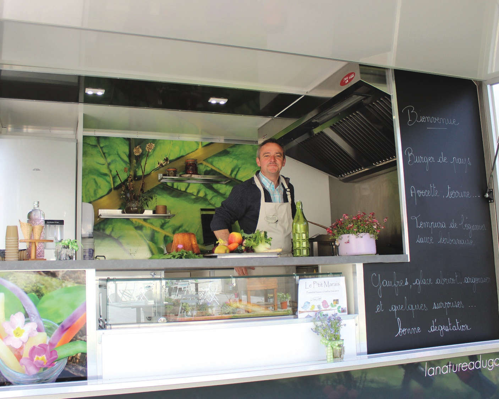

La Nature a du gôut est un foodtruck français ayant comme objectif d’offrir un moment convivial et plaisant pour vos événements publiques, vos séminaires ou vos soirées. Nous proposons un menu variant avec les saisons, liant street food et plantes dans le respect de l’environnement afin de vous montrer que la nature a beaucoup à vous offrir et à vous faire décourvrir.
Après ses études en restauration à l’école d’hôtellerie de Saint Martin à Amiens et à l’école d’hôtellerie de Jeanne d’Arc à Aulnoye-Aymeries, Dupont Ludovic commença sa carrière en tant que cuisinier à l’hôtel Savoy à Londres, puis en tant que chef dans différents restaurants en Françe et à l’étranger. Passionné de jardinage et de cueillette, il souhaite désormais partager sa passion de la cuisine et de la nature au plus grand nombre.
France 3 - Abbeville : le food truck de Ludovic Dupont est un jardin commestible